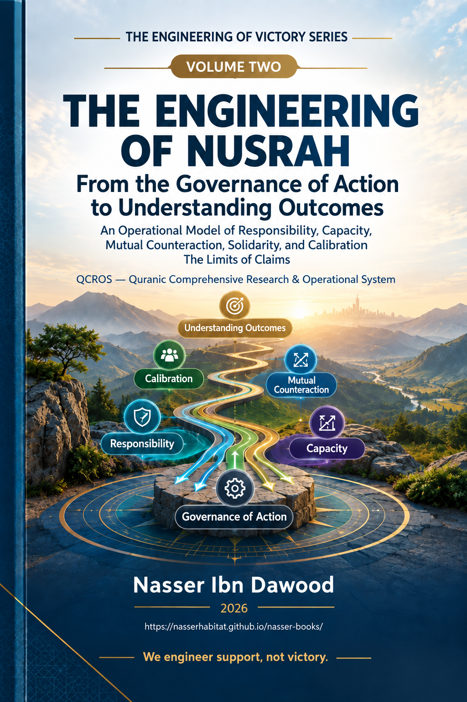

Nasser Ibn Dawood
Text extracted from the author-supplied Word edition; consult the original source.
Preparing the reader…
THE VICTORY ENGINEERING SERIES
Nusrah Engineering — From Action Governance to Reading Outcomes
An operational model of responsibility, capacity, interaction, calibration, and limits of claim
Condensed Semantic English Edition
Nasser Ibn Dawoud — 2026
Prepared as a concise English rendering for international readers
The Global Knowledge Manifesto
I. The Global Knowledge Manifesto
Knowledge is a universal right. The author firmly believes that wisdom should not be locked behind paywalls or language barriers.
• Global Access Policy: All books in this library are available for free in multiple digital formats (PDF, HTML, DOCX, TXT).
• The Digital Library: As of early 2026, the collection hosts 68 volumes (34 in Arabic and 34 in English), fully optimized for AI-assisted research and digital archiving.
• Official Platforms:
Main Website: nasserhabitat.github.io/nasser-books/
GitHub: nasserhabitat/nasser-books
Editorial note: This manifesto is reproduced here at the request of the author and is included in both condensed English volumes.
Contents
Series Statement and Terminological Note
Major Introduction: From Victory Engineering to Responsibility Engineering
Part I — From Knowledge Governance to Action Governance
Part II — Reference and Human Awareness
Part III — Capacity, Direction, Execution, and Interaction
Part IV — Observed Event, Outcome, and Calibration
Part V — The Epistemic Guard: Limits of Claim
Part VI — Pressure Laboratory and Adversarial Tests
Part VII — Failure Matrix, Audit, and Maturity
Part VIII — Limits of QCROS and the Non-Expansion Charter
Part IX — From Reading Patterns to Nusrah Engineering
Major Conclusion and Operational Appendices
Series Statement and Terminological Note
Volume II assumes the methodological foundation established by Volume I. It does not repeat the full evidence ladder and filters. Instead, it asks how disciplined knowledge becomes responsible action and how outcomes can be read without allowing success or failure to rewrite the reference.
The word “nusrah” is used deliberately to designate the humanly actionable field: orientation, integrity of direction, learning, capacity, preparation, action, interaction with competing forces, and revision. The series therefore distinguishes action engineering from outcome engineering and from any attempt to engineer destiny.
The governing distinction is: the human being can be responsible for action without owning the ultimate outcome.
Major Introduction: From Victory Engineering to Responsibility Engineering
The natural question “How do we win?” can become methodologically dangerous when it comes before reference, capacity, and reality assessment. It may encourage the construction of a system that treats the desired outcome as if it were purchasable by following a formula.
Volume II replaces this orientation with responsibility engineering. Human beings can learn, describe reality, estimate capacity, set priorities, execute, face resistance, and review their decisions. They cannot convert these responsibilities into a guarantee of the final outcome.
QCROS is therefore a governance framework, not a prediction machine. It requires the actor to expose transitions, state confidence, identify failure locations, and stop when evidence is insufficient.
Part I — From Knowledge Governance to Action Governance
1. The Operational Constitution
The operational path is organized around the following nodes: N01 textual reference, N02 awareness and human description, N03 capacity, N04 direction and allocation, N05 execution, N06 interaction under competing forces, N08 observed event, N09 outcome, N07 calibration, and N13 the guard of claim limits.
Node